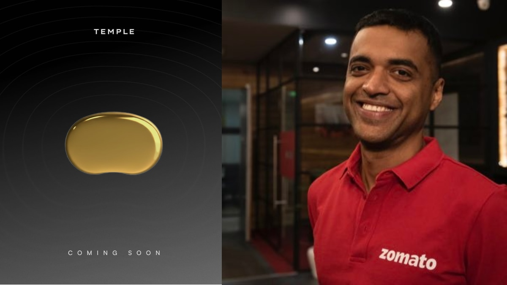

Principal Investigator, Zetesis Labs
(ARTPARK @ IISc) ·
Innovator-in-Residence
Bengaluru, India
Building verified, long-horizon synthetic discovery:
measurement, causal world-models, and formal verification kernels composed
into systems that stay correct as conditions change.
I want to change the world to match an image in my mind, a world where
discovery is faster, more reliable, and less hostage to luck.
Bengaluru, 2026
01 · Engineered discovery
Inquiry is a controllable operator, not a mood. Unknowns are typed,
explicit, testable.
02 · Measurement before models
Trustworthy traces are the substrate of trustworthy inference. Most
"AI failures" are calibration failures in disguise.
03 · Verification at stake
Systems must audit their own uncertainty. The output surface is tethered
to evidence, not narrative fluency.
Education & Awards
Education, awards, invited talks, teaching, and references.
Full CV (PDF).
Education
B.S. (Research), Biology, Indian Institute of Science, Bangalore
(2021–2025). First Class with Distinction, CGPA 8.8/10.
Thesis (A+, Rank 1): Measuring What Models Miss.
Lab training
S. P. Arun (visual neuroscience, IISc) · Rishikesh Narayan (IISc) ·
clinical neurology internships, Sir Ganga Ram Hospital, Delhi (2022, 2023) ·
MSOT neuro-endocrine imaging under Prof. Sanhita Sinharay, IISc (2023) ·
neuro-optics under Prof. Arjun Yodh, U Penn (2022, hybrid).
Awards
iGEM 2022 Gold Medal (Paris Jamboree), Best Climate-Crisis
nomination ·
KVPY Fellow (AIR 50) ·
JEE Main 99.94th percentile ·
Abhiprajna (AIR 1) ·
All-India Subject Topper (Biology) ·
CBSE X & XII 98.7% / 97.6% (100% in Math, Science, Computer Science).
Invited talks
Sponsored panelist, Prosthetics & Robotics 2026, Boston, representing
IISc · invited lectures at IIT Delhi and AIIMS Delhi.
Teaching & workshops
A Textbook of Formal Learning Theory ·
self-authored open-access monograph (202 pp, 18 chapters, 142-node concept
graph).
PDF
·
source.
Neuromorphic Computing at IISc IEEE (120 participants, 3 days,
March 2024); Neural Networks → Circuits → DNA at the
All-India iGEM Meet (60 participants, 16 institutions, July 2024);
GNNs for Breast-Cancer Drug Discovery at IIT Delhi (35 h, 26
M.Tech./PhD, October 2024); embedded C / RTOS / Cortex-M crash course via
IISc Robotics Club (Jan–May 2023). Member, Eta Kappa Nu (HKN).
Industrial leadership
Board Member, ARTPARK Industry 5.0 programme (2025–).
References
Prof. Bharadwaj Amrutur, Dept. of Electrical Communication
Engineering, IISc Bangalore (career mentor; sponsor of JRD-Tata ISC, ARCNet, IiR
charter) ·
Prof. Sumanta Bagchi, Centre for Ecological Sciences, IISc
(undergraduate thesis advisor, Terrapulse) ·
Prof. S. P. Arun, Centre for Neuroscience, IISc (TCN instructor,
neuroscience collaborator) ·
Prof. Dipankar Nandi, Dept. of Biochemistry, IISc Bangalore
(Essentials in Immunology course instructor; course-based recommender) ·
Gopika Kannan, Executive Advisor, Zetesis Labs ·
Narayan Rangarajan, Head of Agile R&D, Ather Energy ·
Dr. Sudip Mondal, Head of Hardware, Firmware, and Systems
Engineering, Ather Energy.
Open Source
Personal and Zetesis research code, live from
@Zetetic-Dhruv.
ARCNet client deployments (Satsure, School of Meaningful Experiences, Open Science
Stack) are listed with their clients in
Studying Discovery While Doing It.
Loading profile data from GitHub…
Repositories
Loading repositories…
Contribution Activity (last year)
Loading contribution graphs…
Public GitHub REST API · cached locally for 30 minutes · contribution graphs
rendered via ghchart.rshah.org.
The Programme (2025–Present)
At Zetesis Labs I run one research programme across seven fields, asking whether
discovery can be engineered rather than left to chance. Current work separates into three
layers, each with concrete artifacts: a formal verification kernel written
in Lean4; a synthetic-discovery stack (LLM harness → compile-filter
pipelines → verified outputs); and industrial and biomedical pilots
that test each piece against reality. The programme's deployed outputs are Layer-2
(root-cause analysis, calibration, compliance, reliability planning), not philosophy as
user interface.
Institutional pattern: I have founded or led Zetesis Labs, ARCNet Research, and the
JRD Tata Innovation Support Center at IISc, and sit on the ARTPARK Industry 5.0 programme
board alongside BEL, Bosch, and Toyota. Each of those exists to make a specific piece of
the discovery stack reachable in practice.
What follows is what each layer looks like as a working instance.
Selected Work
Active pilots and released artifacts, organised by layer.
Projects tagged Synthetic Discovery are long-horizon
verified outputs generated and maintained using AI.
Applied Pilots · Industrial & Biomedical
Ather Energy · Robotic welding reliability (K383)
Causal root-cause analysis under drift. Deployed, 2025.
Problem. Intermittent welding anomalies on a production line
produced high MTTR because the linkage between alarm, defect, and action was weak and
ad-hoc.
Approach. A causal world-model for the welding cell aligned to the
4Ms: Man (operator context), Machine (telemetry/configs), Method (process
recipes), Material (batch provenance). Implemented as an OWL ontology, internally
named K383.
Uncertainty diagnostic. A geometric belief-function analysis
(Cuzzolin framework) classifies each failure path by resolvability: 60% are
diagnosable from error codes alone, 12% require targeted additional evidence, and 28%
are structurally unresolvable without live data integration. The diagnostic tells
the operator not just what happened, but what else needs to be known.
Output. Ranked suspects, fault-path narrative, and minimum next checks
that collapse uncertainty fastest. Drift is treated as first-class; verification gates
keep explanations tethered to evidence rather than LLM fluency.

Temple · Sensor validation & causal calibration
Speckle plethysmography feasibility; phantom-first.
Engagement with Continue Research (Eternal).
Three workstreams. (1) A stable SPG reference system with primary
flow/perfusion metrics; (2) a reproducible multi-layer phantom with controlled
confounders; (3) a calibration mapping with QC gates.
Thesis. Calibration is where sensing programmes quietly fail.
Making confounders and interventions first-class (rather than nuisance) makes
calibration transferable rather than artisanal.
Low-cost NDIR CO2 cell (K33-ELG) on embedded compute, designed to capture
sub-minute flux pulses at research-grade precision. Three-layer Bayesian calibration
chain: FTIR step-test → lab pulse simulation → multi-day field mass-closure
via alkali trap. Field-deployed in Lahaul–Spiti valley over 2024–25.
~$150Bill of materials
±2 ppmPrecision
3.8%Flux MAE (mass-closure)
sub-minPulse capture
Open methods, datasets, and analysis pipeline released at
ARC-Net / CO2mmunity.
Final 95% posteriors: gain = 0.993 ± 0.005; offset = 16 ± 10 ppm;
drift = 0.002 ± 0.020 ppm h−1.
iGEM · Halocleen · Pseudomonas putida for halocarbon
biodegradation
IISc iGEM 2022 project, Paris Jamboree Gold Medal,
Climate-track finalist. Two patent-filed bioreactor designs.
Problem. CFC-11 and CFC-12 persist in the stratosphere for decades
with no scalable biological degradation path. The project asked whether an
engineered soil bacterium could be coaxed into degrading halocarbons at rates
relevant to atmospheric removal.
Approach. Engineered Pseudomonas putida as the chassis,
carrying synthetic circuits assembled from plasmids drawn from the methanotroph
halocarbon-oxidation literature. Two bioreactor designs (continuous-flow
trickle-bed and gas-lift variants) were optimised for the low-solubility
substrate regime and filed as patents.
Team Lead, 2022. ~10-person team (bio, hardware, modelling, wet-lab validation).
Covered in the IISc press release: IISc students win again at iGEM.
21,522 lines of Lean4, machine-checked with no gaps.
A self-contained Lean4 kernel of formal learning theory, currently under arXiv
review and being upstreamed to Lean4 cslib and mathlib.
Four results it carries that the field had been citing rather than proving:
Borel–analytic separation theorem (concurrent with
Krapp–Wirth 2024).
Constructive MWU-based compression proof.
PAC-Bayes bound: first Lean4 formalization of record.
Choquet capacitability: previously absent from Mathlib4.
Formalization is the claim. The claim is checked.
The fundamental theorem, stated and
proved in the kernel as a single term
(FLT_Proofs/Theorem/PAC.lean):
PAC-learnability ↔ finite VC dim ↔ bounded compression
scheme ↔ vanishing Rademacher complexity ↔ polynomial growth function.
Sauer–Shelah, symmetrisation, and concentration inequalities are the three
loadbearing lemmas.
Transformer Learning Theory
Measurability-theoretic foundations for attention architectures.
Lean4 results: attention-routing measurability; softmax–argmax equivalence under
appropriate limits; a universality statement (every measurable router
is attention); and a NullMeasurable necessity result.
31 machine-checked theorems extending Spekkens's epistemic
toy-theory of quantum states.
A Lean4 formalization of Spekkens's 2007 epistemic toy-theory of quantum states,
together with HC(κ): the first continuous measure of
interpolation failure in epistemic theories of mechanics. HC = 0 iff the
theory's admissible configurations are rectangular (decomposable).
Boundary results. The four entangled states admit HC = 2.00 bits;
the three separable states admit HC = 0. Only private-evidence
conditioning collapses nonzero HC; shared evidence resolves 0% of it. A
cross-domain oscillation theorem the Lean4 kernel checks by construction. Three
predictions beyond Spekkens follow as corollaries and are verified in the kernel.
LLM harness · First Proof Challenge
Synthetic Discovery
An LLM-driven proof search harness that reached 4 of 10 on Harvard's
First Proof Challenge benchmark using $32 of commodity API compute
on a single MacBook. The number is not the point. The shape of the failures is.
Where the harness succeeds is where formalization gates exist; where it fails is
where they are absent.
Neuroscience Modeling
Hyper-Resonant Dendritic Oscillations (HDO)
Single-neuron timing primitive · preprint on request.
Claim. A single stellate cell carries two stable intrinsic
oscillatory regimes (a θ-like slow regime and a high-frequency HDO regime)
with stochastic switching driven by channel noise.
Mechanism. Stochastic CaV gating (Gillespie) plus a
calcium-activated current plus BCM-like intrinsic plasticity regulates the
transition probability between regimes. Bifurcation reasoning points to a
subcritical Hopf / SNIC candidate; robustness confirmed under parameter sweeps.
Consequence. A timing primitive that is neither a fixed oscillator
nor a pure integrator. Metaplasticity is the switch; the switch is the
computation.
Open Python platform for machine-checked neurobiophysics.
Converts ModelDB .hoc models into a type-inheritance DAG so
neurobiophysics models can be composed, type-checked, and verified like programs
rather than passed around as opaque simulation scripts.
NIAS collaboration · Neurochaos learning for calibration
With the National Institute of Advanced Studies, IISc campus.
Using neurochaos-learning primitives (chaotic-attractor features) as a calibration
substrate for biosensors where conventional linear calibration is brittle to
nonstationary confounders.
Studying Discovery While Doing It
Each of the programmes below was run as a nested experiment: a social and
research test of what makes discovery faster, more reliable, and less accidental at a
given scale. The order is ascending: founder / student-club to team, team to
chapter, chapter to programme, programme to research institute.
Virog MedTech
Founder · IISc-funded student medtech club. ~5 people.
Institutional grant pool of ₹10 L.
What was tested. Whether a five-person student team, with an
institutional grant pool but no commercial pressure, could deliver three
independent medtech devices from first principles on pre-clinical timelines.
Devices. OECT wound bandage; UV-SSI patch for HAI prevention;
physics-driven CVD predictor.
Highlight. The CVD predictor won
1st prize at IIC 2025 (IISc Innovation Challenge).
The club is now inactive;
the three devices and the mentorship chains came out of it, and the structure of
the experiment is what we kept.
IISc Robotics Club · Team Vicharaka
Founder & President, 2023–. ~30 members.
₹5 L club budget; additional ₹25 L external grant (ISRO IRoC-U
finalist).
What was tested. Whether parallel multi-domain student robotics
projects can run concurrently under a shared budget without losing depth.
Active lines under the club: lunar rover, rehab exoskeleton, drone, 6-DoF
manipulator.
Lunar rover · Team Vicharaka. Out of the club, the
Mars/lunar-rover team
Vicharaka
("one who thinks") qualified for the
University Rover Challenge (URC)
at the Mars Desert Research Station, Utah. I led the
Life-Detection subsystem: biosignature-sampling and
onboard assay for the Martian-soil analogue, pipelined to the rover's onboard
compute.
The same team was a finalist in the
ISRO Robotics Challenge (IRoC-U 2024)
run by URSC, winning a ₹25 L grant; supported by the Nahar Centre
for Robotics at IISc under Prof. Pradipta Biswas.
IEEE Computer Society / CIS Student Chapter, IISc
Chair. 80+ members.
What was tested. Whether the chapter-as-lab-group model can scale
an open-source curriculum under the IEEE brand. Launched an open-source 6G
lecture series; the chapter grew to 80+ members during my term.
EntIISc · IISc Entrepreneurship Cell
Vice-President. 44 deep-tech proposals screened. Brokered
₹15 L seed pool (FSID).
What was tested. Whether a campus cell, working inside the IISc
incubation structure, could route deep-tech student proposals to institutional
funding at scale. Output: 44 screened proposals, Boeing sponsorship, and a
working pathway to the FSID institutional grant pool.
What was tested. Can the same operator catch the
center-of-mass unknown in eight unrelated domains within a single summer?
All 8 tracks reached working prototype; the portfolio itself is the contribution.
Voice-first teleoperation of a robotic arm from smartphone
(safety + latency trade-off).
Digital-twin-driven bionic arm with calibration drift as the
primary failure mode.
Low-cost servo + encoder stack (FSM decoding of noisy
inputs).
BCI/EEG → text with generative-AI coherence gates.
Physics-to-math knowledge engine (compiler as verification
gate).
General-purpose multi-I/O power converter.
Fuel-quality automation with Pass/Fail/Inconclusive as a
first-class output.
Forensic triage with Bayesian uncertainty and mandatory
justification chains.
Also prototyped SoTA
instrumentation for the Karnataka Forensics Lab.
ARCNet Research · R&D foundry at ARTPARK @ IISc
Founder & PI, 2024–Jun 2025. 18-member institutionally-
funded lab at ARTPARK. Transitioned to permanent team.
What was tested. Whether an institutionally-funded deep-tech
foundry can deliver three unrelated research engagements end-to-end, each on its
own scientific terms. Three independent research deployments below.
Satsure · KALIDEO
Remote-sensing QC · classical +
deep-learning
Dockerized pipeline testing classical and
deep-learning approaches for cloud segmentation on satellite hardware.
Optimized for on-device inference under bandwidth and power
constraints.
Automated grading of interviews, presentations,
and speech, with LMS integration. Audio capture, video capture,
grading pipeline, LLM feedback, and report generation run as
independent microservices so each can be scaled, swapped, or audited
without touching the others.
OSS is a volunteer-driven, non-profit digital public
infrastructure for AI-powered, self-driving labs, backed by ARTPARK
(IISc) and the Red Black Trust. Its architectural thesis: treat
experiments as cloud-dispatchable programs (“write once, run
anywhere”) across a network of programmable physical labs.
The Science Compiler is my contribution: a three-layer
behaviour-tree architecture for robotic laboratories that compiles
high-level scientific intent into robot-agnostic execution via
ontology-driven protocol synthesis. It slots into OSS's inner
experiment-optimization loop and feeds the ROS2-based Robotic
Application Stack (RAS).
Principal Investigator · Innovator-in-Residence ·
Board Member, 2025–Present.
What is being tested. Whether a sustained research programme can
close the loop from formal epistemology to industrial deployment across multiple
partners. Active: manufacturing R&D automation pilots with BEL, Bosch, and
Toyota.
More Projects
Expand (10 projects)
Clientless research
Artificial Neuroscientist
Clientless research · ARCNet-funded, same model as
Terrapulse.
Closed-loop spike-sorting and video-based behavioural grading wired to an
automated hypothesis → proof pipeline. Studies what a minimum-viable
neuroscience pipeline looks like when human-in-the-loop is optional and the
protocol is ontology-driven.
A cerebral-blood-flow physics world-model feeding an SPG-based wearable sensor;
brain phantoms for controlled validation; and a transfer-learning bridge from
SPG to PPG so the physics stays tethered to the sensor that survives reality.
Deterministic hemodynamics via radiometric inference
Physics-first pipeline for cuffless
hemodynamics: stiffness discrimination under controlled perturbations, treated
as an inverse problem against a tractable forward model rather than a regression
on raw PPG.
Multigas sensor suite · CO2 /
N2O / CH4
Sibling programme to Terrapulse extending
low-cost field chemistry to three greenhouse gases. KOH / V2+-HCl /
KI colourimetric chemistries paired with NDIR and catalytic readouts; LoD
< 10 ppb across species.
Siemens knee-resection robot
6-DoF surgical manipulator with a physics-
accurate digital twin driving pre-cut trajectory planning; ±0.2 mm
bone-cut fidelity at proof-of-concept. Shared platform for kinematic
verification experiments.
Formal theory (secondary)
ICM Unbundling
Lean4 formalisation of OOD geometry for factored
knowledge-graph embeddings.
Seven theorems proving that independent causal mechanisms make distribution
shift geometrically visible, with VC-dimension bounds, a risk decomposition,
and an entanglement-vulnerability converse. The converse does the work:
entanglement is a vulnerability, not a feature.
FLT dataset + fine-tuned SLM
Structured JSON dataset for formal learning
theory paired with a fine-tuned small language model specialised in FLT
formalisation. Built to close the gap between high-effort human proofs and
machine-assisted formalisation. Repo:
formal-learning-theory-dataset.
Generate-and-verify pipeline for physics problems.
Compile/filter workflow producing 500+ labelled mechanics problems with
verified solutions. A concrete test of whether synthetic problem
generation can cross the quality threshold required for training data. The
answer was yes, when verification is load-bearing.
BCI/EEG → text with generative-AI post-editing (JRD)
Neural signal decoding with coherence-checked synthesis.
Decoding pipeline from low-density EEG to natural-language text, with synthetic
data augmentation and a coherence-checked LLM post-edit stage. Exploratory
decoding metrics; the useful result was the post-edit gate: without it, fluent
hallucination dominates.
Neuroscience (secondary)
Information–energy efficiency operator
Complex-valued tradeoff operator for neural computation.
A complex-valued operator that expresses the energy–information tradeoff in
neural computation, validated in Brian2 simulations. System-level
energy–information efficiency in visual cortex served as the undergraduate
project in the Arun lab at IISc.
Contact
The most useful opening is a paragraph describing the problem,
the constraints, and what solved would look like. I read everything
directly.
Knowledge is what remains after inquiry. Ignorance is not a residual error term; it has
internal geometry. If you can represent that geometry, you can engineer discovery.
The conventional view treats ignorance as noise, a residual to be minimized by
more data or better models. That view predicts monotonic progress with compute. What
we observe instead is that the hardest problems keep the same shape as compute grows:
more of the same model on more of the same data converges to a better version of the
same failure.
Zetema's reversal is the starting move. If ignorance has internal structure, progress
depends on acting on that structure, not dissolving it. The rest of this page
shows what the programme has produced. This section describes the framework
that produced it. It is not decoration; it is the operating manual for every artifact
above. The sections below are intentionally sparser than the work above; each
is load-bearing, and none are duplicated.
Hover a node to read its definition.
Calculus of Discovery
Internally I represent a local theory-state as a compact object
URS = ⟨A, M, R, T⟩: axioms, mechanisms,
representations, traces. Inquiry is a small set of primitive operators that modify this
object. The operators are not a style of thought; they are what a deployed system is
allowed to do.
Imagine (abd)
Propose new variables or mechanisms. Migrate unarticulated
regularities into explicit questions. This is where grammar grows.
Quadrant transition: UK → KU.
Experiment (do)
Design minimum interventions that collapse uncertainty cheapest.
The cost function is real, not metaphorical.
Quadrant transition: KU → KK.
Describe
(rep)
Retype traces into stable representations. Keep language
consistent with what data can actually carry.
Quadrant transition: stabilize KK against drift.
Communicate
(com)
Import external knowledge as traces or representations, not
axioms. Other people's certainty does not become yours automatically.
Quadrant transition: URSi ↔ URSj,
via shared traces.
Measurement classes
A single "confidence" number is a projection; like any projection, it drops
information. Zetema tracks four orthogonal measurements instead. They do not aggregate:
a claim can be high-Pl and low-Coh (admissible, but doesn't compose), or high-Comp and
low-Inv (everything is resolved inside a frame that dies under perturbation). The four
are the minimum set that doesn't lose structure.
Class
Operational question
Plausibility (Pl)
Could this claim be consistent with current structure? Is it admissible
at all?
Coherence (Coh)
Does the claim compose with other admitted content, or does it fracture?
Invariance (Inv)
Does it survive perturbations of the current frame, i.e. coherent future
challenges, not just repeated trials?
Completeness (Comp)
What fraction of the obligations the claim induces are actually
discharged?
Efficiency of validated novelty:
η = ΔKvalidated ∕ (E × Iprior)
Low η typically signals missing causality, missing abstraction, or missing
intervention design, not low effort. It is a diagnostic, not a score.
Cognitive architecture: learning vs imagination
Two agents with the same traces can diverge because they factor the world differently.
That factoring is a property of the agent, not the data. Zetema names two distinct
faculties rather than compressing them into "intelligence":
Learning
Supplies bedrock content. Tends to constrain you to what is
repeatedly experienced and safely generalized. Learning admits
constraints.
Imagination
Posits a structure cheaply from thin traces, then acts to make
it real through tools, experiments, and world-shaping. Imagination
expands agency.
A serious system keeps ignorance explicit while still allowing fast synthesis.
Learning without imagination is corrigible but timid; imagination without learning is
bold and wrong. Modern LLMs, absent verification gates, are the second case made
concrete: fluent imagination with no admitted constraint. The measurement classes
above tell you when the second case has occurred.
Formal verification as infrastructure
Formalism here is not decoration. It is the substrate that makes reasoning systems
converge, makes ignorance explicit, and keeps explanations tethered to what can be
justified. Without it, the previous three sections reduce to vocabulary: a nice way
to talk about what discovery should feel like, with nothing checking whether the talk
matches the system.
Lean4 is the working language for three specific reasons. First, proof terms
are first-class evidence: a Lean proof is the object it
certifies, not a citation to one. Second, the type system makes
ignorance explicit: every hypothesis, every assumption, every hole appears as a type
obligation that cannot hide. Third, decidable type-checking with explicit universe
management scales: the 21,522-line FLT kernel stays sound because no part of
it relies on a human's mental model of what should have been proved.
The programme trades on this directly: every output that leaves a Zetesis
system can carry a checkable receipt. A partner does not have to trust the
reasoning; they can verify it.
Current tools: Lean4 / type theory / structured knowledge graphs. Research direction:
a geometric lens on model behaviour (including LLMs) where homogeneity, impurities,
and phase transitions in generalization are treated as objects rather than side
effects.
Everything above the divider is evidence. Everything below it is
the grammar that generated it. If the grammar is load-bearing, the
evidence ought to feel inevitable in retrospect: each pilot, each kernel,
each programme slotting into a place the framework had already named. That is
the claim, and the rest of the page is how we are checking it.